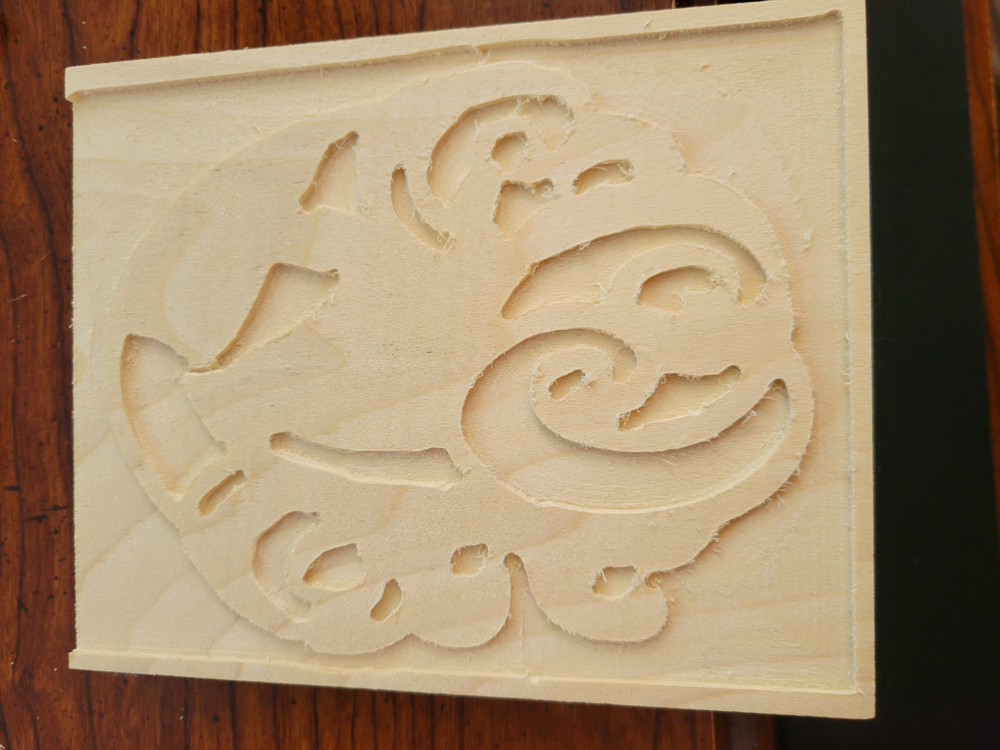

Phase 1:Sign Series
I frequently go out for walks to local parks and I ended up finding a lot of diffrent signs there.

The first place I went to this past week was a small park in Union City called Gordon E. Oliver Eden Shores Park. I took a picture of the sign that was in the playground that had warnings and guildlines in how to keep a safe enviornment in the playground area. This is something I never saw as a kid in a playground, but now signs like these are the norm and are everywhere.
.jpg)
.jpg)
I also took a picture of a sign posted on a fence warning people not to trepass onto the marsh on the other side of the fence across the playground and a trash bin.
.jpg)
.jpg)
The next place I visited was Lake Elizabeth in Fremont.I took picutres of diffrent signs there.My favorite sign illustrated to not feed the ducks, however people were still feeding the ducks...
.jpg)
.jpg)
.jpg)
I also took pictures of some signs inside a park garage in San Jose.
.jpg)
.jpg)
And here are my mock up desgins that were inspired by the signs I found.


Phase 2:Present CAD (Modeling objects)
For my first stamp design, I used the letter “X” because can be used to represent the unknown or to mark where something is located. Because of its versatile use, I thought it would be good to use it in a stamp design “X”. The second stamp design was inspired by the video game series, Legend of Zelda, the symbol is very simple but very iconic so I thought it would be interesting to see it in a stamp.

Phase 3:CAM (Toolpath Simulations)
Here is a link to the "X" stamp.
Here is a link to the "Triforce" stamp.

Phase 9:Final Stamp and Signs
Sign Video
Location #1
The first sign is located in Lake Elizabeth, Fremont, a park that I used to frequently go to for walks. Many different aquatic fowl such as geese and ducks at the park, but these fowl are very aggressive… to the point where it’s kinda scary...Especially those Candain geese. In the park there are many signs posted NOT to feed them, despite this people still continue to feed the birds. So they decided to create a sign that would warn people about the aggressive behavior these geese might display, hopefully deterring them from feeding or interacting with them.
Here is a link to the fusion file.

A rendered image of the sign.
Location #2
My second sign is located at a small residential park where I used to hang out with family members who lived nearby. While the park is small in size it has a beautiful atmosphere in the springtime with cherry blossom trees and various other flowers decorating the scene. However the nice atmosphere is ruined by the smelly swamp on the other side of the fence where the landfill is dumped. I created a sign to warn people about the odor that might ruin their nice day out.
Here is a link to the fusion file.

A rendered image of the sign.
My Stamp
My stamp design was inspired by the meaning of my name. In arabic one of the translations for “Suhayla” can be the name for the Canopus star, which is in the Carina constellation that symbolizes the keel of the ship. So I created a stamp with the design of a keel of a ship breaking through some waves.
When cutting out the stamp I had to get rid of some details in the original design because it was causing some errors to occur in fusion. Nonetheless the design came out fine with the exception of one border edge being cut out in the carving process.
Here is a link to the fusion file.
Here is a rendered image of the stamp.
The CAM cutting simulations.
Stamp and Sites
For my stamp “ink” I decided to use some black and blue acrylic paint that I had and painted it onto the stamp with a large paint brush. I also had leftover printer ink that I got from a recycling materials project and I tried using that as an “ink for the stamp”, but the result wasn’t that great. I continued experimenting with different consistencies of the paint until I got a result that I was happy with.
.jpg)
.jpg)
.jpg)
.jpg)
I decided to post my stamp at my Lake Elizabeth location.
.jpg)
.jpg)
The next place I visted was Lake Chabot's Marina Cafe posted by Kel Dizon, since I wasn't able to hike the entire bike trail.
The third location I went to the Taco Truck in San Jose posted by Juile Wei.
.jpg)
.jpg)
The last place I visted was the "Vortex Sounds", since I was curious about it.